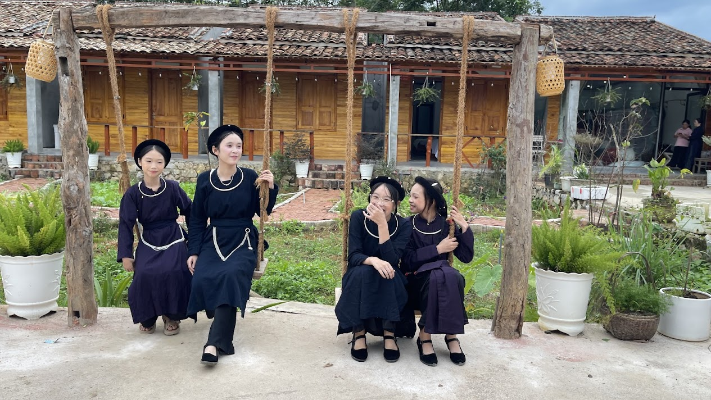

Những vị khách nghỉ tại Dương Gia Đạt Homestay và khám phá Quỳnh Sơn
Mỗi chuyến đi đều mang đến những trải nghiệm riêng. Tại làng du lịch cộng đồng Quỳnh Sơn, Bắc Sơn, Lạng Sơn, du khách không chỉ tìm kiếm một nơi để nghỉ ngơi mà còn có cơ hội khám phá cảnh sắc thiên nhiên, tìm hiểu văn hóa truyền thống và cảm nhận nhịp sống bình dị của người dân địa phương.

Với Dương Gia Đạt Homestay, niềm vui trong mỗi ngày đón khách là được chào đón những người bạn từ nhiều nơi, giới thiệu về quê hương Quỳnh Sơn và góp phần giúp du khách có thêm những kỷ niệm đẹp trong chuyến đi của mình.
Dương Gia Đạt Homestay – điểm dừng chân giữa làng du lịch cộng đồng Quỳnh Sơn
Nằm tại làng du lịch cộng đồng Quỳnh Sơn, huyện Bắc Sơn, tỉnh Lạng Sơn, Dương Gia Đạt Homestay là nơi du khách có thể lựa chọn làm điểm nghỉ chân khi muốn khám phá vùng đất giàu bản sắc văn hóa này.
Đến với homestay, du khách có cơ hội trải nghiệm không gian nhà sàn truyền thống, tìm hiểu nét sinh hoạt của người Tày và dành thời gian tận hưởng bầu không khí yên bình nơi bản làng.
Thay vì chỉ ghé qua trong một chuyến tham quan ngắn, việc lưu trú tại Quỳnh Sơn giúp du khách có thêm thời gian cảm nhận vẻ đẹp của vùng đất Bắc Sơn, từ những nếp nhà sàn đến khung cảnh núi non và thung lũng bao quanh làng.

Những vị khách và hành trình khám phá vẻ đẹp Quỳnh Sơn
Một trong những điều tạo nên sức hấp dẫn của du lịch Quỳnh Sơn là sự kết hợp giữa cảnh quan thiên nhiên, văn hóa bản địa và cuộc sống bình dị của người dân. Mỗi vị khách khi đặt chân đến đây đều có thể tìm thấy cho mình một cách khám phá riêng.
Có người muốn dành thời gian nghỉ ngơi trong không gian yên tĩnh. Có người yêu thích chụp ảnh phong cảnh, khám phá những nếp nhà sàn truyền thống hoặc tìm hiểu về đời sống văn hóa của cộng đồng người Tày.
Từ Dương Gia Đạt Homestay, du khách có thể lên kế hoạch khám phá các điểm đến tại Quỳnh Sơn và khu vực Bắc Sơn tùy theo thời gian lưu trú, điều kiện thời tiết và sở thích cá nhân.

Khám phá văn hóa người Tày tại làng Quỳnh Sơn
Quỳnh Sơn được biết đến với những nếp nhà sàn truyền thống và bản sắc văn hóa của cộng đồng người Tày. Đây cũng là một trong những nét đặc trưng khiến hành trình đến Bắc Sơn trở nên khác biệt so với những chuyến du lịch nghỉ dưỡng thông thường.
Trong thời gian lưu trú, du khách có thể tìm hiểu về kiến trúc nhà sàn, phong tục địa phương, ẩm thực truyền thống và những nét sinh hoạt gắn bó với đời sống của người dân trong bản.
Nếu có dịp tham gia các hoạt động văn hóa phù hợp với lịch tổ chức tại địa phương, du khách còn có thể tìm hiểu thêm về những giá trị truyền thống được gìn giữ qua nhiều thế hệ.
Những trải nghiệm này giúp chuyến đi không chỉ dừng lại ở việc ngắm cảnh mà còn mở ra cơ hội hiểu hơn về con người và văn hóa của vùng đất mình ghé thăm.

Ngắm cảnh thung lũng Bắc Sơn và khám phá núi Nà Lay
Nhắc đến du lịch Quỳnh Sơn, không thể bỏ qua vẻ đẹp thiên nhiên của vùng Bắc Sơn. Những dãy núi nối tiếp nhau, cánh đồng trải rộng theo mùa và các bản làng nằm giữa thung lũng tạo nên khung cảnh đặc trưng của miền núi xứ Lạng.
Với những người yêu thích nhiếp ảnh và khám phá thiên nhiên, khu vực thung lũng Bắc Sơn là điểm đến đáng cân nhắc trong hành trình. Mỗi thời điểm trong ngày và mỗi mùa trong năm đều có thể mang đến những sắc thái cảnh quan khác nhau.
Núi Nà Lay cũng là địa danh được nhiều người quan tâm khi tìm hiểu về cảnh đẹp Bắc Sơn. Trước khi tham quan hoặc leo núi, du khách nên kiểm tra điều kiện thời tiết, tình trạng đường đi và lựa chọn lịch trình phù hợp với thể lực.

Để chuẩn bị cho chuyến đi thuận tiện hơn, bạn có thể tham khảo thêm bài viết du lịch Bắc Sơn trên website và lựa chọn các địa điểm phù hợp với thời gian của mình.
Trải nghiệm ẩm thực và nhịp sống bình dị tại Quỳnh Sơn
Bên cạnh cảnh đẹp và kiến trúc nhà sàn, ẩm thực địa phương cũng là một phần đáng khám phá khi đến Quỳnh Sơn. Những món ăn truyền thống của người Tày và đặc sản vùng Bắc Sơn mang đến cho du khách cơ hội tìm hiểu thêm về văn hóa ẩm thực xứ Lạng.
Du khách có thể tìm hiểu các món ăn theo mùa, hỏi người dân địa phương về những đặc sản nổi bật và lựa chọn trải nghiệm ẩm thực phù hợp với nhu cầu của mình.
Đôi khi, điều khiến một chuyến đi trở nên đáng nhớ không chỉ là những địa điểm đã ghé thăm mà còn là khoảng thời gian được sống chậm lại, trò chuyện, ngắm cảnh và tận hưởng không khí bình yên của bản làng.

Lưu giữ những khoảnh khắc đẹp trong chuyến đi
Những bức ảnh được chụp trong chuyến đi thường lưu giữ nhiều kỷ niệm đáng quý: khoảnh khắc nghỉ ngơi tại homestay, khung cảnh nhà sàn, những cung đường làng hay vẻ đẹp của núi rừng Bắc Sơn.
Với Dương Gia Đạt Homestay, mỗi vị khách là một phần trong câu chuyện về du lịch Quỳnh Sơn. Những hình ảnh thực tế trong quá trình lưu trú và khám phá địa phương giúp giới thiệu rõ hơn vẻ đẹp của điểm đến, đồng thời truyền cảm hứng cho những người đang lên kế hoạch đến Bắc Sơn.
Nếu chia sẻ hình ảnh khách lưu trú trên website hoặc mạng xã hội, homestay luôn nên tôn trọng quyền riêng tư và xin phép khách trước khi đăng tải những hình ảnh có thể nhận diện họ.

Lên kế hoạch nghỉ dưỡng tại Dương Gia Đạt Homestay
Nếu bạn đang tìm kiếm một homestay tại Quỳnh Sơn để bắt đầu hành trình khám phá Bắc Sơn, Dương Gia Đạt Homestay là một lựa chọn để tham khảo.
Bạn nên xác định trước ngày đến, số lượng người và thời gian lưu trú để thuận tiện lựa chọn phòng. Nếu muốn tham quan nhiều địa điểm, hãy dành thời gian sắp xếp lịch trình và kiểm tra thông tin di chuyển trước chuyến đi.
Bạn có thể xem thêm thông tin về các phòng nghỉ tại Dương Gia Đạt Homestay hoặc truy cập trực tiếp trang đặt phòng homestay tại Quỳnh Sơn để gửi thông tin đặt phòng.
Hẹn gặp bạn tại Quỳnh Sơn!
Hãy lên kế hoạch cho chuyến đi của bạn và khám phá vẻ đẹp thiên nhiên, văn hóa truyền thống cùng nhịp sống bình dị tại làng du lịch cộng đồng Quỳnh Sơn, Bắc Sơn, Lạng Sơn.
Dương Gia Đạt Homestay mong được chào đón bạn trong hành trình khám phá vùng đất xứ Lạng.
ĐẶT PHÒNG NGAY